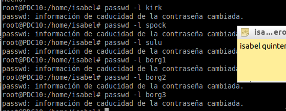

- Módulo: Administración de Sistemas Operativos
- Título del trabajo Samba PDC.
- Componentes del grupo: Isabel Quintero Sánchez.
- Curso Académico: 2014/2015
- Fecha de entrega: 17 de Marzo de 2015
Lo primero que debemos hacer es configurar el fichero de configuración "/etc/samba/smb.conf" según la documentación proporcionada por el profesor, ya que Samba ya está instalado en nuestra máquina.
Debemos asegurarnos de que existen todos los directorios nombrados en los recursos compartidos de la configuración Samba.
Luego, configuraremos la red del servidor Samba PDC de la siguiente forma:
Luego, configuramos la máquina Windows 7 que actuará como cliente:
Creamos el grupo "machines" en el servidor.
Luego, creamos las cuentas de máquina "client3" y "client4"..
Bloqueamos la cuenta Unix para evitar el acceso a una shell..
Vamos a crear la cuenta Samba de la máquina. La opcion –m indica que se trata de una cuenta de tipo máquina.
Debemos crear las cuentas Unix.


Bloqueamos cada una de las cuentas unix creadas.
Creamos las cuentas Samba con cada uno de los usuarios creados y con el usuario root.
Además es conveniente crear la carpeta del perfil de cada usuario y poner los permisos correspondientes.
Debemos poner como nombre del equipo "client310".
Como a la hora de unir al dominio nos daba error, hemos buscado información y encontrado que tenemos que entrar en "Ejecutar -> rgedit" y añadir las siguientes claves en "[HKEY_LOCAL_MACHINE\SYSTEM\CurrentControlSet\services\LanmanWorkstation\Parameters]": "DomainCompatibilityMode"=dword:00000001" y "DNSNameResolutionRequired"=dword:00000000".
Y, alterar las claves que se encuentran en "[HKEY_LOCAL_MACHINE\SYSTEM\CurrentControlSet\services\Netlogon\Parameters]": "RequireSignOnSeal"=dword:00000000" y "RequireStrongKey"=dword:00000000".
Una vez hecho esto, vamos a "Equipo -> Propiedades -> Configuración Avanzada" y en dominio ponemos el nombre que hemos definido en el servidor para unirnos. Vemos que se une correctamente y sin fallos.
Para hacer la comprobación, reiniciamos el equipo y ahora, iniciamos sesión con un usuario de los creado anteriormente y unidos a Samba, por ejemplo, "sulu".
Aclaraciones: